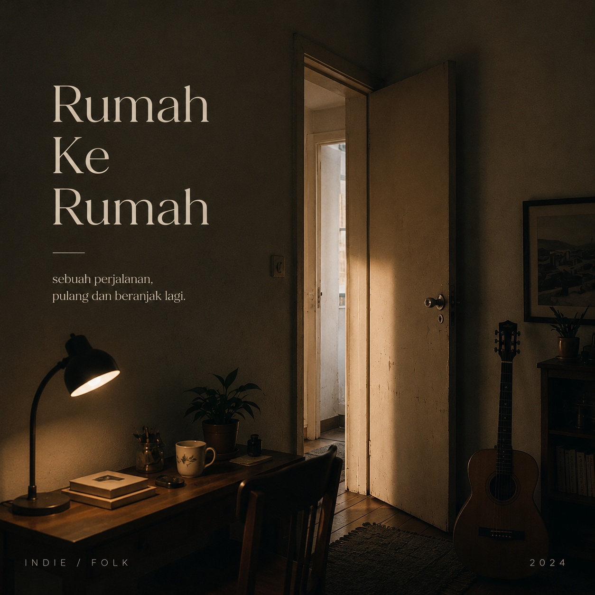

Hindia adalah proyek musik dari Baskara Putra yang dikenal melalui karya-karyanya yang jujur, reflektif, dan dekat dengan realitas kehidupan sehari-hari. Musiknya memadukan unsur indie pop, alternatif, dan sentuhan elektronik yang lembut, menciptakan suasana yang hangat sekaligus melankolis. Lirik-liriknya sering berbicara tentang kegelisahan, pencarian makna hidup, kesehatan mental, hingga perjalanan menjadi dewasa, sehingga terasa seperti percakapan akrab dengan seorang teman di tengah malam.
Karya Hindia banyak digemari oleh generasi Z karena mampu menggambarkan perasaan yang sering sulit diungkapkan dengan kata-kata. Dengan bahasa yang puitis namun tetap sederhana, lagu-lagunya menjadi teman bagi mereka yang sedang bertumbuh, menghadapi ketidakpastian, atau mencari tempat untuk pulang di tengah hiruk-pikuk kehidupan. Melalui musiknya, Hindia menghadirkan ruang untuk merenung, menerima diri sendiri, dan percaya bahwa setiap langkah kecil tetap berarti.
2.5M
Spotify Followes
1.8M
Monthly Listeners
3
Official Full Albums